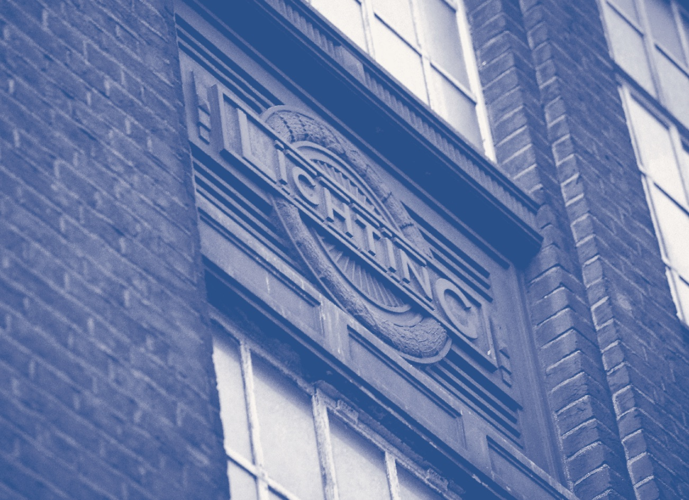

<div class="">
    <div class="">
        <div class="">
            <div class="center">
                
            </div>
            <div class="two-column blue p4">
                GREEN ROOMS is in a striking early Art Deco building that was originally constructed
                in 1925 for The North Metropolitan Power and Electricity Company.
                Set across four floors, the hotel is on Station Road opposite Wood
                Green Underground Station, which is on the Piccadilly Line. GREEN
                ROOMS is just 12 minutes from King’s Cross and St Pancras International
                stations and 20 minutes from the West End. The interior has been
                lovingly restored by renowned London architects SODA. The lobby
                and room furnishings are a mixture of stylish vintage alongside
                contemporary furniture from Folk.
            </div>
        </div>
    </div>
</div>
